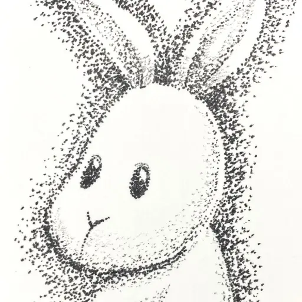

ABOUT
作家について

セキマコト
多摩美術大学卒。点描とうさぎの絵、絵本の挿絵を制作しています。
小さな点を重ねる時間や、手で描いた線のゆらぎを大切にしています。静かでやさしい空気の中に、少しだけユーモアのある作品を届けたいと思っています。
現在は点描画を中心に、絵本制作やキャラクター作品にも取り組んでいます。
おたよりを送る
多摩美術大学卒。点描とうさぎの絵、絵本の挿絵を制作しています。
小さな点を重ねる時間や、手で描いた線のゆらぎを大切にしています。静かでやさしい空気の中に、少しだけユーモアのある作品を届けたいと思っています。
現在は点描画を中心に、絵本制作やキャラクター作品にも取り組んでいます。
おたよりを送る